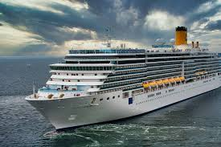
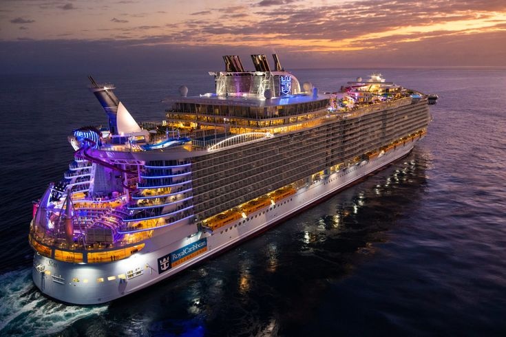
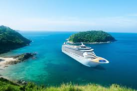

|  |
PULMANTUR EXPRESSDestino: Barcelona a Roma Precio: 1400€/p Hora de Salida: 21:00 |
Descripcion:Explora los rincones más importantes de Roma mientras experimentas un viaje de primera con comida y bebida incluidos las 24h del día (buffet). A partir de los 18 años cócteles ilimitados. Para los menores, cócteles sin alcohol y gaseosas ilimitadas. |
|  |
POP DISCO CRUISEDestino: Barcelona a Atenas Precio: 1700€/p Hora de Salida: 19:00 |
Descripcion:Este crucero temático inspirado en la época de los 80 recrea un ambiente de la época en la que todas las noches se realizará una fiesta con los mejores DJs del momento. Este crucero tiene incluido solo las cenas y solamente podrán acceder al crucero personas mayores de 18 años. |
|  |
CELEBRITY CRUISESDestino: Barcelona a Turquia Precio: 3200€/p Hora de Salida: 17:00 |
Descripcion:Este crucero de lujo realiza conciertos diarios con las celebridades más importantes del momento. Entre ellos David Bisbal o Bustamante. Al acceder al crucero dispondrás de buffet libre las 24 horas del día y coctelería gratis. Además tendrás acceso a uno de los mejores spas de España gracias a sus nuevas tecnologías. |